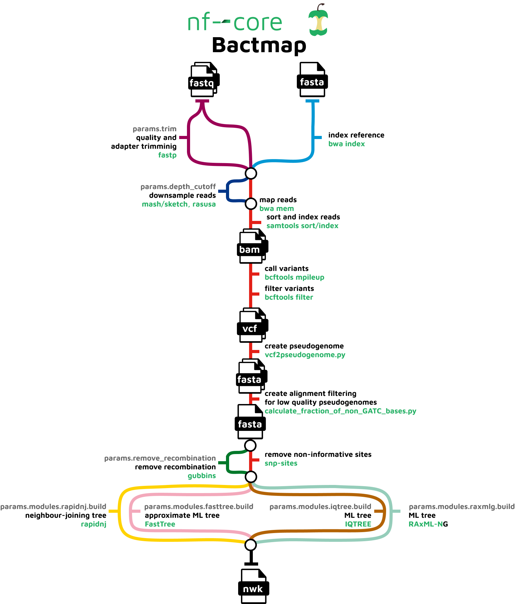
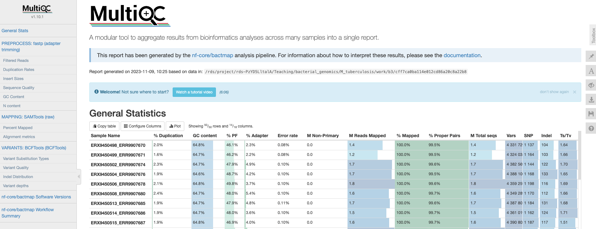
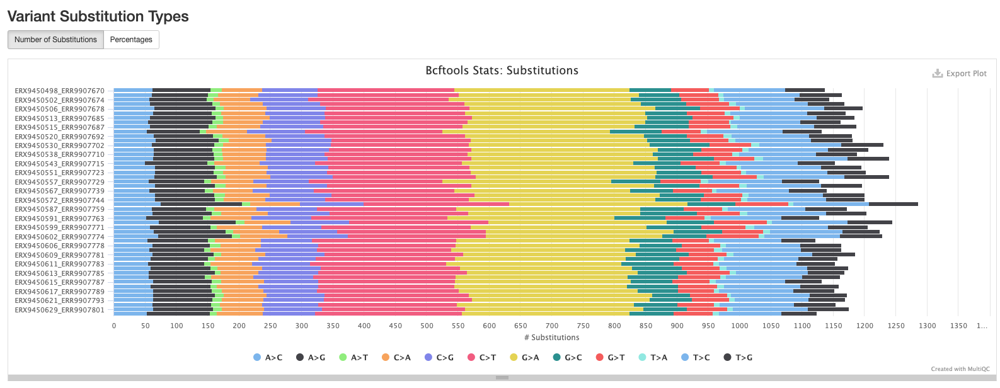
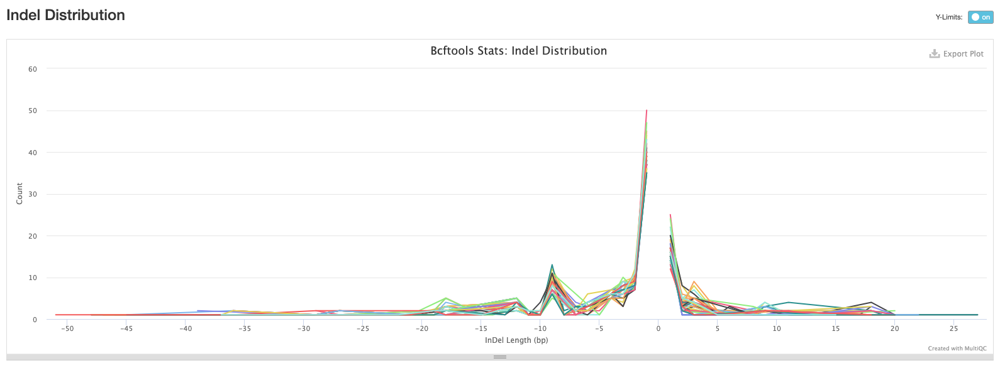
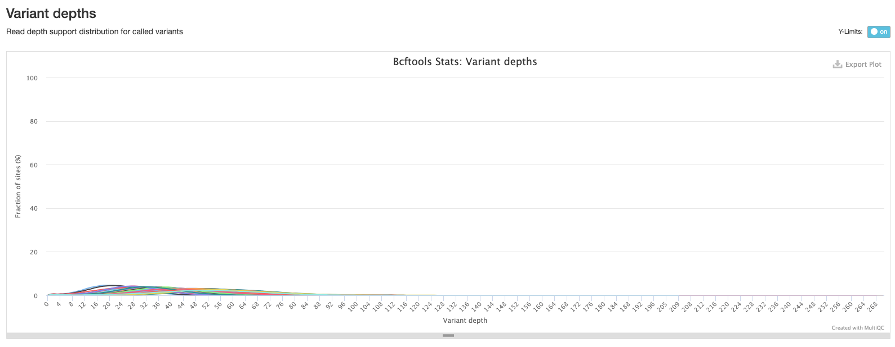
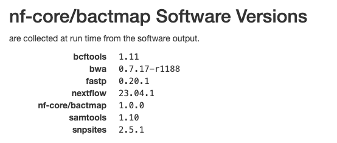

13 The nf-core/bactmap pipeline
- Summarise the steps performed by the
nf-core/bactmappipeline - Memorise where the output files created by pipeline are located.
- Describe the main output files created by the pipeline.
- Interpret the output QC report generated by the pipeline and use it make a decision about whether to exclude poor quality samples.
- Apply the
nf-core/bactmapto a set of samples.
13.1 Pipeline Overview

nf-core/bactmap is a bioinformatics analysis pipeline for mapping short reads from bacterial WGS to a reference sequence, creating filtered VCF files, making pseudogenomes based on high quality positions in the VCF files and optionally creating a phylogeny from an alignment of the pseudogenomes.
It runs the following tools:
BWA index- indexes reference fasta filefastp- trims reads for quality and adapter sequences (Optional)mash sketch- estimates genome size if not providedRasusa- downsamples fastq files to 100X by default (Optional)BWA mem- maps reads to the referenceSAMtools- sorts and indexes alignmentsBCFtools- calls and filters variantsvcf2pseudogenome.py- converts filtered bcf to pseudogenome FASTAcalculate_fraction_of_non_GATC_bases.py- creates whole genome alignment from pseudogenomes by concatenating fasta files having first checked that the sample sequences are high qualityGubbins- identifies recombinant regions (Optional)SNP-sites- extracts variant sites from whole genome alignmentRapidNJ,FastTree2,IQ-TREE,RAxML-NG- construct phylogenetic tree (Optional)
See Course Software for a more detailed description of each tool.
Along with the outputs produced by the above tools, the pipeline produces the following summary containing results for all samples run through the pipeline:
multiqc_report.html- final summary of trimming and mapping statistics for input files in HTML format
13.2 Running nf-core/bactmap
The bactmap pipeline requires a samplesheet CSV file in the same format as the one we used for bacQC so we can re-use that samplesheet CSV file. If you decided to remove any samples because they didn’t pass the QC, then edit the samplesheet CSV file accordingly. There are many options that can be used to customise the pipeline but a typical command is shown below:
nextflow run nf-core/bactmap \
-r "1.0.0" \
-profile singularity \
--input SAMPLESHEET \
--outdir results/bactmap \
--reference REFERENCE \
--genome_size 4.3MThe options we used are:
-profile singularity- indicates we want to use the Singularity program to manage all the software required by the pipeline (another option is to usedocker). See Data & Setup for details about their installation.--input- the samplesheet with the input files, as explained above.--outdir- the output directory for the results.--reference- the path and name of the reference genome.--genome_size- estimated size of the genome -Rasusauses this value to calculate the genome coverage.
13.3 bactmap results
After running the pipeline, we can look at the output directory in results/bactmap (if your pipeline finished running), or you can also use the preprocessed/bactmap results. There are various directories containing output files:
| Directory | Description |
|---|---|
bwa/index |
Contains the index of the reference sequence |
fastp |
Contains the results of the trimming and adapter removal performed by fastp |
fastqc |
Contains QC metrics for the fastq files generated with fastQC |
multiqc |
Contains a html file containing summaries of the various outputs |
pipeline_info |
Contains information about the pipeline run |
pseudogenomes |
Contains consensus fasta files for each sample which have the sample variants compared to the reference included. The alignment we’ll use for the next step can also be found in this directory (aligned_pseudogenomes.fas) |
rasusa |
Contains the subsampled post-trimmed fastq files |
samtools |
Contains the sorted bam files and indices created by bwa and samtools as part of the mapping process |
snpsites |
Contains a variant alignment file created from aligned_pseudogenomes.fas with snp-sitesthat can be used as input for tree inference tools |
variants |
Contains filtered vcf files which contain the variants for each sample |
13.3.1 The MultiQC summary report
The first thing we’ll check is the HTML report file created by MultiQC. Open your File Explorer , navigate to preprocessed/bactmap/multiqc/ and double click on multiqc_report.html. This will open the file in your web browser of choice:

General statistics
Let’s go through each section starting with the “General Statistics”:

This is a compilation of statistics collected from the outputs of tools such as fastp, samtools and BCFtools. Sequencing metrics such as the % of duplicated reads and GC content of the reads are shown alongside the results of the mapping (% reads mapped, num). This is a useful way of quickly identifying samples that are of lower quality or perhaps didn’t map very well due to species contamination.
fastp
There are a number of plots showing the results of the fastp step in the pipeline. These plots are explained in The bacQC pipeline.
Samtools
The plots in this section are created from the results of running samtool stats on the sorted bam files produce during the mapping process. The first shows the number or percentage of reads that mapped to the reference.

The second plot shows the overall alignment metrics for each sample. Hover over each dot to see more detailed information.

BCFtools
The plots in this section provide information about the variants called using bcftools. The first plot shows the numbers or percentage of each type of variant in each sample.

The second plot shows the quality of each variant called by bcftools. The majority of variants in each sample are high quality.

The third plot shows the distribution of lengths of Indels (insertions are positive values and deletions are negative values). This is useful information to have, but in practice we tend to exclude indels when building alignments for phylogenetic tree building.

The final bcftools plot shows the distribution of the number of reads mapping to each variant position and is one of the metrics used to filter out low quality variants (the fewer the reads mapping to a variant position, the lower the confidence we have that the variant is in fact real).

Software versions
This section of the report shows the software run as part of nf-core/bactmap and the versions used. This is particularly important when reproducing the analysis on a different system or when writing the methods section of a paper.

13.4 Check how much of the reference was mapped
It’s good practice to do an additional check of our mapping results before proceeding to the next step of our analysis, phylogenetic tree inference. We can do this by checking how much of the reference genome was mapped in each sample and use a tool called seqtk to do this. If a position in the reference genome is not found in the sample it is marked as a N and any regions of the reference that were not mapped to sufficient quality are marked as -. So we use seqtk comp to count the number of A’s, C’s, G’s and T’s, sum the totals and then divide by the length of the reference sequence. This gives us a proportion (we can convert to a % by multiplying by 100) of the reference sequence that was mapped in each sample. Ideally, we would like to see more than 90% of the reference mapped but this will depend on the species and how close the reference is to the samples you’re analysing. However, anything more than 75% should be sufficient for most applications. The main impact of less mapping is fewer phylogenetically informative positions for constructing phylogenetic trees.
We’ll start by activating the seqtk software environment to make seqtk available:
mamba activate seqtkTo run seqtk comp on a single sample (in this example we’ll analyse ERX9450498_ERR9907670), the following commands can be used:
# create output directory
mkdir -p results/bactmap/pseudogenomes_check
# run seqtk comp
seqtk comp preprocessed/bactmap/pseudogenomes/ERX9450498_ERR9907670.fas > results/bactmap/pseudogenomes_check/ERX9450498_ERR9907670.tsvIf you open the output file ERX9450498_ERR9907670.tsv in the terminal with cat:
cat results/bactmap/pseudogenomes_check/ERX9450498_ERR9907670.tsvYou should see output like this:
ERX9450498_ERR9907670 4435783 715550 1348517 1343684 715401 0 0 312631 1040588 0 0 0There are no headers in the output but the important information is contained in the first six columns:
- Column 1 - our sample ID.
- Column 2 - the total length of the sequence (this is the length of the reference).
- Column 3 - the total number of ’A’s in the sequence.
- Column 4 - the total number of ’C’s in the sequence.
- Column 5 - the total number of ’G’s in the sequence.
- Column 6 - the total number of ’T’s in the sequence.
To calculate the percentage of the reference mapped we divide the sum of ’A’s, ’C’s, ’G’s and ’T’s, divide by the total length of the sequence and multiply by 100:
(715550+1348517+1343684+715401)/4435783 * 100 = 92.95%This is more than 90% so we can proceed with the analysis of this sample.
13.5 Create final alignment
Now that we’ve mapped our sequence data to the ancestral reference, called and filtered variants and created consensus pseudogenomes that we checked, we can create the final alignment we will use for inferring a phylogenetic tree. As we are not excluding any samples based on the pseudogenome check we did above, we can use the aligned_pseudogenomes.fas file that was created by bactmap (it’s worth remembering that this alignment includes the reference as well as the pseudogenomes). If any of the pseudogenomes contained more than 25% missing data and were removed, we could create our final alignment with cat as described below.
One of the advantages of working with pseudogenome FASTA files is that the files are all the same length i.e. the length of the reference. This means that they are effectively already aligned so we don’t need to do any additional aligning like we might do with gene sequences from different isolates. If you need to create a final alignment from the pseudogenome files, it’s as simple as using cat:
First create a tmp directory and move the pseudogenome files you want to include to the tmp directory:
mkdir tmp
mv *.fas tmpNow change to the tmp directory and cat the pseudogenome files to create the alignment:
cd tmp
cat *.fas > aligned_pseudogenomes.fas13.6 Mask final alignment
It’s standard practice to mask certain regions of the TB genome when we build alignments for building phylogenetic trees. In particular, repetitive regions of the genome such as PE/PPE genes and regions with an abundance of SNPs are removed as they are often difficult for the mapping software to accurately align and may cause misalignments leading to errors in variant calling with may lead to inaccurate tree topologies. There are two ways to do the masking:
- Mask the regions in the VCF files before creating the pseudogenomes.
- Create the final alignment then apply the masking to all the samples at once.
As we’ve already created our final alignment, we’re going to take the second approach and apply the mask to the aligned_pseudogenomes.fas file. The co-ordinates we’re going to use come from Goig et al. 2020 and have been transferred to the new ancestral reference sequence. We’ll use a tool called remove_blocks_from_aln.py to do the masking.
Let’s start by activating the remove_blocks environment:
mamba activate remove_blocksTo run remove_blocks_from_aln.py on aligned_pseudogenomes.fas, the following commands can be used:
# create output directory
mkdir -p results/bactmap/masked_alignment
# remove_blocks_from_aln.py
remove_blocks_from_aln.py -a preprocessed/bactmap/pseudogenomes/aligned_pseudogenomes.fas -t resources/masking/MTBC0_Goigetal_regions_toDiscard.bed -o results/bactmap/masked_alignment/aligned_pseudogenomes_masked.fasThe options we used are:
-a- the alignment file we want to mask.-t- a BED file containing the coordinates of the regions we wish to mask.-o- the name of the masked alignment file.
You should see output like this:
Found 1024 regions
Adjusted 51 sequences
Original alignment length: 4435783 New alignment length:4435783
Done.The masked final alignment will be saved to the results/bactmap/masked_alignment/ directory.
Alternatively we’ve provided a script, 05-mask_pseudogenome.sh in the scripts directory which could be used instead with bash:
bash scripts/05-mask_pseudogenome.sh13.7 Summary
- The
nf-core/bactmappipeline automates several steps to generate reference-based consensus genomes, such as: indexing the reference genome; quality-trimming reads; mapping the reads to the reference; calling variants; and generating the final consensus genomes. - Several key output files include:
- An interactive quality report located in
multiqc/multiqc_report.html. - FASTA files for each new pseudogenome in
pseudogenomes/SAMPLE-NAME.fas. - A single FASTA file with all the genomes concatenated in
pseudogenomes/aligned_pseudogenomes.fas.
- An interactive quality report located in
- Key quality control statistics output by the pipeline include the % of reads mapped to the reference, the number and type of called variants, amongst others.
- Additional steps not included in the pipeline are:
- Calculating the fraction of missing bases in each pseudogenome.
- Masking repetitive regions of the genome.
References
Goig G, et al. Contaminant DNA in bacterial sequencing experiments is a major source of false genetic variability. BMC Biology. 2020. DOI